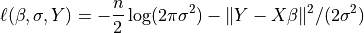
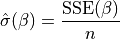

Note
This page is a reference documentation. It only explains the class signature, and not how to use it. Please refer to the user guide for the big picture.
3.6.1. nistats.regression.OLSModel¶
-
class
nistats.regression.OLSModel(design)¶ A simple ordinary least squares model.
- Parameters
- designarray-like
This is your design matrix. Data are assumed to be column ordered with observations in rows.
- Attributes
- designndarray
This is the design, or X, matrix.
- whitened_designndarray
This is the whitened design matrix. design == whitened_design by default for the OLSModel, though models that inherit from the OLSModel will whiten the design.
- calc_betandarray
This is the Moore-Penrose pseudoinverse of the whitened design matrix.
- normalized_cov_betandarray
np.dot(calc_beta, calc_beta.T)- df_residualsscalar
Degrees of freedom of the residuals. Number of observations less the rank of the design.
- df_modelscalar
Degrees of freedome of the model. The rank of the design.
Methods
model.__init___(design)
model.logL(b=self.beta, Y)
-
__init__(self, design)¶ - Parameters
- designarray-like
This is your design matrix. Data are assumed to be column ordered with observations in rows.
-
fit(self, Y)¶ Fit model to data Y
Full fit of the model including estimate of covariance matrix, (whitened) residuals and scale.
- Parameters
- Yarray-like
The dependent variable for the Least Squares problem.
- Returns
- fitRegressionResults
-
logL(self, beta, Y, nuisance=None)¶ Returns the value of the loglikelihood function at beta.
Given the whitened design matrix, the loglikelihood is evaluated at the parameter vector, beta, for the dependent variable, Y and the nuisance parameter, sigma.
- Parameters
- betandarray
The parameter estimates. Must be of length df_model.
- Yndarray
The dependent variable
- nuisancedict, optional
A dict with key ‘sigma’, which is an optional estimate of sigma. If None, defaults to its maximum likelihood estimate (with beta fixed) as
sum((Y - X*beta)**2) / n, where n=Y.shape[0], X=self.design.
- Returns
- loglffloat
The value of the loglikelihood function.
Notes
The log-Likelihood Function is defined as

The parameter
 above is what is sometimes referred to
as a nuisance parameter. That is, the likelihood is considered as a
function of
above is what is sometimes referred to
as a nuisance parameter. That is, the likelihood is considered as a
function of  , but to evaluate it, a value of
is needed.
, but to evaluate it, a value of
is needed.If
is not provided,
then its maximum likelihood estimate:
is plugged in. This likelihood is now a function of only
and is technically referred to as a profile-likelihood.References
- 1
Green. “Econometric Analysis,” 5th ed., Pearson, 2003.
-
whiten(self, X)¶ Whiten design matrix
- Parameters
- Xarray
design matrix
- Returns
- whitened_Xarray
This matrix is the matrix whose pseudoinverse is ultimately used in estimating the coefficients. For OLSModel, it is does nothing. For WLSmodel, ARmodel, it pre-applies a square root of the covariance matrix to X.